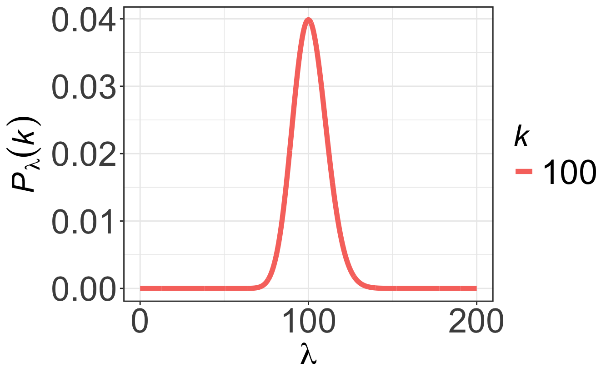
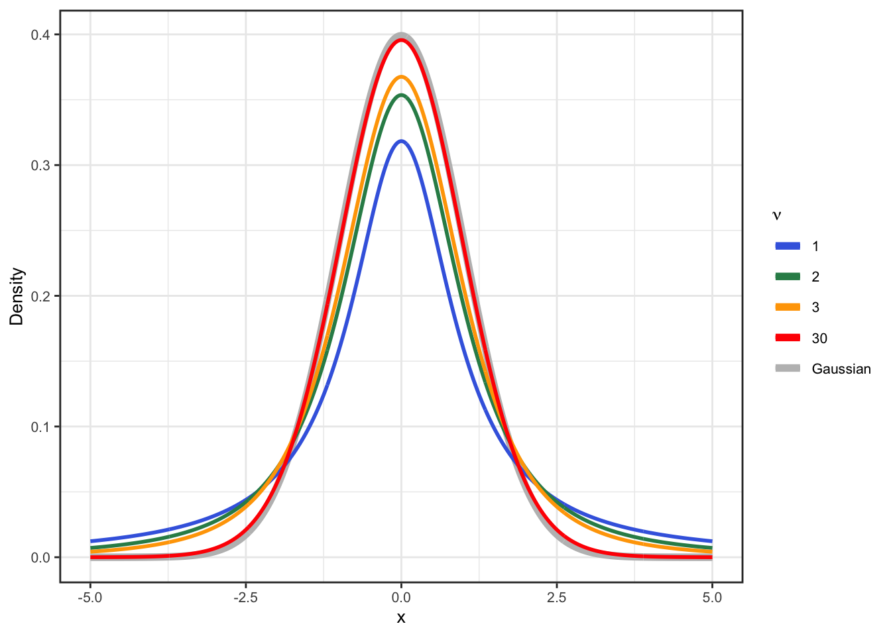

2 A little reminder on Statistics
2.1 Why are statistical tools necessary in physical science?
When doing Science, one has to fully grasp the concept of physical measurement. Let’s take an example to visualize the importance of this concept.
2.1.1 A practical example
Let’s say you want to communicate to someone a temperature, and tell this person that the temperature is “38”. If this is a random person in the street, they might think: “nice, let’s go to the beach today!”. If this random person is from the USA, they’re gonna think: “damn, where did I put my coat?”. If that person happens to be a physician, they might think: “that kid’s got a slight fever”. If they are a physicist doing a cryostat experiment, they might think “let’s check the He tank level”… you see that one of the most important part of the measurement is missing: its unit. Units are there so that people understand each other when exchanging data, and you see here that 38 Celsius, 38 Fahrenheit or 38 Kelvin are quite different, and this quantity will mean different things in different contexts. A physical quantity given without its unit would be absolutely meaningless (unless, of course, you are looking at a unit-less quantity, like a count).
Now let’s consider the body temperature of 38 °C given to a physician. How did you measure this temperature? With a mercury graduated thermometer or with a thermocouple? In the first case, you can probably assume that this value is given with a measurement error of at least 1 °C, meaning that the temperature you give to the physician is (38±1) °C, i.e. the physician won’t be able to decide whether they should be concerned or not. In the second case, the temperature is often given with a 0.1 °C precision, so the physician, seeing that the body temperature is (38±0.1) °C, will probably tell you to take an aspirin and rest instead of giving you something stronger to treat a possible infection. Given that the uncertainty on the given value is of 0.1 °C, one should in fact give the temperature with matching decimal precision, i.e. (38.0±0.1) °C. Writing (38±0.1) °C, (38.00001±0.1) °C or (38.00±0.10000) °C would be meaningless too.
Important
With this, we see that a physical measurement should be given with four parts: its actual value, its decimal precision, its uncertainty, and its unit. Should any of these four parts be missing in a physical quantity that you wanted to share, it would at best be imprecise, and at worst be utterly meaningless.
2.1.2 Probabilistic description of physical systems
Let’s continue with our example of the body temperature measured with a thermocouple or a laser thermometer with a 0.1 °C precision. Our first measurement of the body temperature yielded (38.0±0.1) °C. Now let’s repeat this measurement a number of times in various area of the body (which are left to your imagination). Let’s say it then shows (38.1±0.1) °C, (38.0±0.1) °C, (38.3±0.1) °C, (37.9±0.1) °C, (38.2±0.1) °C, (38.1±0.1) °C, (38.1±0.1) °C, (39.8±0.1) °C. What is the actual body temperature then? Should we stick to a single measurement? Of course not. We have to make an histogram of the measured values, and study the distribution of the measurements (Figure 2.1). We can then see that one of the values is clearly an outlier – something might have gone wrong there. What if we had done the measurement only once and only measured that value? We might have jumped to a very wrong conclusion, with possibly a very serious consequence like giving the wrong medicine.
With this example, we see that a physical measurement is not absolute. In fact, a physical measurement is an assessment of the probability that the physical value is within a certain range. In the case of our example, after removing the outlier for which we are certain that the measurement is wrong, it means that the measured body temperature has a high probability to be somewhere between 38.0 °C and 38.2 °C. In other (more general) terms, one could consider a measurement of a quantity \(X\) as a probability \(P(x - \sigma < X < x + \sigma )\) that the quantity \(X\) has a value between \(x-\sigma\) and \(x+\sigma\). The uncertainty \(\sigma\) around the mean value \(x\) is usually given as the standard deviation of the distribution of measurements around the mean.
Important
Since physical measurements are in fact probabilities, we can – and must – use statistical tools to characterize them.
2.2 Quantifying the properties of data
2.2.1 Data representation – presenting a measurement
Depending on the data you are looking at, various ways of representing them are possible. I can’t stress enough the importance of picking the right representation for your data, it is the expression of your physical sense. A good representation will help you make sense of your data and communicate your results. A bad representation, well…
2.2.1.1 Histograms
When looking at discrete values or when you want to characterize the distribution of a measurement, it is often a good idea to use the histogram representation, which represents the frequency at which a measurement is made within a certain range, called bin. Let’s take Figure 2.1 and plot it with various bin sizes. One can see that the choice of bin size is important, as it determines whether your data are noisy or lack fine information.


2.2.1.2 Graphs
In case you want to represent continuous data, say the evolution of a quantity \(y\) with respect to a quantity \(x\), you should then use the graph representation. As we saw before, any physical quantity should be given with its uncertainty and unit. The same applies to a graph: it must clearly display the units of the quantities \(x\) and \(y\), and error bars that are usually taken as the standard deviation of each individual measurement (that should thus be performed a number of times, depending on what you are looking at).


You can think of each set of {datapoint + error bar} as an histogram: the displayed point is the mean value of the histogram, and the error bar is its standard deviation. Therefore, plotting a straight line between points is usually pointless. Plotting a line going through the data points only has meaning if this line results from a physical model explaining the variation of the quantity \(y\) with the evolution of the quantity \(x\) – this is called a fit, and we will see more about it in the R class later.
2.2.2 Characterizing an ensemble of measurements
If we take \(N\) repeated measurements of an observable \(x\), it is then natural to try to assess our knowledge of the ensemble of measures through (1) a single number representing the measured quantity, and (2) a second number representing the spread of measurements. As we saw before, the observable \(x\) is thus generally defined by its central (mean) value \(\left< x \right>\), its spread \(\sigma_x\) (standard deviation or uncertainty), and its unit.
2.2.2.1 Central value: mode, median and mean
The mode of an ensemble of measurements is its most frequent value. If the measurement in question is of a continuous variable, one has to bin the data in terms of a histogram in order to quantify the modal value of that distribution: the mode will be the position of the maximum of the histogram.
The median value of the ensemble is the value of \(x\) for which there are an equal number of measurements above and below that point. If there is an even number of measurements, then the median value is taken as the midpoint between the two most central values.
The mean (or arithmetic average) is more often used than the two previous quantities, as it usually provides a better way to quantify the “typical” value measured. The mean value is denoted either by \(\overline{x}\) or \(\left< x \right>\), and is given by:
\[ \overline{x}=\left< x \right>=\frac{1}{N}\sum_{i=1}^Nx_i, \] where \(x_i\) is the \(i\)-th measurement of \(x\).
Figure 2.1 shows the representation of a sample of data plotted in a histogram. This figure shows the mode, mean and median. For this particular sample of data, the mean is 38.3 °C, the median is 38.1 °C, and the mode is 38.0 °C. The fact that the mode is smaller than the mean is an indication that the data are asymmetric about the mean. We usually refer to such a distribution as being skewed, and in this case the data are skewed to the right.
2.2.2.2 Quantifying the spread of data: variance and standard deviation
The mean of an ensemble of data doesn’t provide any information as to how the data are distributed. So any description of a set of data just quoting a mean value is incomplete. We need a second number in order to quantify the dispersion of data around the mean value. The average deviations from the mean, \(\left< x-\overline{x} \right>\), is not a useful quantity as, by definition, this will be zero for a symmetrically distributed sample of data (which is always the case for randomly distributed data – a consequence of the central limit theorem, as we will see later). We should rather consider the average value of the squared deviations from the mean as a measure of the spread of our ensemble of measurements. This is called the variance \(V(x)\), which is given by:
\[ \begin{aligned} V(x)&=\left< (x-\overline{x})^2 \right>\\ &=\frac{1}{N}\sum_{i=1}^N(x_i-\overline{x})^2\\ &=\overline{x^2}-\overline{x}^2 \end{aligned} \tag{2.1}\]
The square root of the mean-squared (root-mean-squared or RMS) deviation is called the standard deviation, and this is given by:
\[ \begin{aligned} \sigma(x)&=\sqrt{V(x)}\\ &=\sqrt{\overline{x^2}-\overline{x}^2} \end{aligned} \tag{2.2}\]
The standard deviation quantifies the amount by which it is reasonable for a measurement of \(x\) to differ from the mean value \(\overline{x}\). Considering a Gaussian distribution, we would expect to have 31.7% of measurements deviating from the mean value by more than 1\(\sigma\), and this goes down to 4.5% of measurements to deviate by more than 2\(\sigma\), and 0.3% of measurements to deviate by more than 3\(\sigma\). Thus, if we perform a measurement that deviates by a significant margin from the expected value of \(\left< x \right>\pm\sigma\), we need to ask ourselves about the significance of our measurement.
In general, scientists often prefer using the standard deviation rather than the variance when describing data, since as the former has the same units as the observable being measured.
Important
A measurement of a quantity \(x\) is therefore usually presented under the form \(\left< x \right>\pm\sigma_x\), where \(\left< x \right>\) is the arithmetic average and \(\sigma_x\) is the standard deviation of the data.
2.2.2.3 Caveats
The above considerations all assume that the distribution of measured values is mono-modal, i.e. the histogram of the measured values is centered around a single value. In the case of a multimodal distribution such as shown in Figure 2.4, it would be meaningless to use such tools as the fine information on the distribution would be lost.

In this case, one should try to deconvolute the distribution in terms of individual peaks, and gather their positions, widths and intensities.
2.3 Useful distributions
2.3.1 Probability Density Functions
We should now introduce the notion of Probability Density Function (PDF). By definition, a PDF is a distribution where the total area is unity. The variation of the PDF is represents the probability of something occurring at that point in the parameter space. In general, a PDF will be described by some function \(P(x)\), where
\[ \int_a^b P(x)dx=1, \tag{2.3}\] where \(a\) and \(b\) are the limits of the valid domain for the \(P(x)\) function. The probability of obtaining a result between \(x\) and \(x + dx\) is thus \(P(x)dx\). Usual PDFs encountered in physics are the Poisson distribution as well as the Gaussian distribution, that we will describe in a bit.
2.3.2 PDFs, mean and variance
Let us define a PDF \(P(x)\) describing a continuous distribution. We can compute the average value of some quantity by computing the integral over this quantity multiplied by the PDF.
For example, the average value of the variable \(x\), distributed according to the PDF \(P(x)\) in the domain \(-\infty < x <\infty\), is given by:
\[ \begin{aligned} \left< x \right>&=\int_{-\infty}^{\infty}xP(x)dx\\ \text{or } \left< x \right>&=\sum_{i}x_iP(x_i) \text{ in the case of a discrete distribution} \end{aligned} \tag{2.4}\]
This is called the first moment of the PDF.
This method can be used to compute average values of more complicated expressions. The mean value of \((x - \overline{x})^2\), i.e. the variance \(V\), is thus given by the \(\overline{x}\)-centered second moment of the PDF, such as:
\[ \begin{aligned} V&=\int_{-\infty}^{\infty}(x - \overline{x})^2P(x)dx\\ \text{or } V&=\sum_{i}(x_i - \overline{x})^2P(x_i) \text{ in the case of a discrete distribution} \end{aligned} \tag{2.5}\]
2.3.3 The Poisson distribution
2.3.3.1 Definition
When a certain reaction happens randomly in time with an average frequency \(\lambda\) in a given time interval, then the number \(k\) of reactions in that time interval will follow a Poisson distribution:
\[ P_\lambda(k) = \frac{\lambda^ke^{-\lambda}}{k!} \tag{2.6}\]
Examples of encounters of Poisson distributions could be as various as the number of calls received per hours in a call center, the yearly number of Prussian soldiers killed by horse kicks… or the number of particles (photons, neutrons, neutrinos…) hitting a detector every second.


2.3.3.2 Characteristics
As shown on Figure 2.5, for small \(\lambda\) the distribution is asymmetric and skewed to the right. As \(\lambda\) increases the Poisson distribution becomes more symmetric.
Following Equation 2.4, the average number of observed events, \(\left< k \right>\), is given by:
\[ \begin{aligned} \left< k \right> &= \sum_{k=0}^\infty kP_\lambda(k) = \sum_{k=1}^\infty k\frac{\lambda^ke^{-\lambda}}{k!}\\ &= \lambda e^{-\lambda} \sum_{k=1}^\infty \frac{\lambda^{k-1}}{(k-1)!}= \lambda e^{-\lambda} \sum_{k=0}^\infty \frac{\lambda^{k}}{k!}\\ &= \lambda \end{aligned} \]
In the same manner and by using the “trick” \(x^2=x(x-1)+x\), the variance \(\sigma^2(k)\) of the distribution is given by:
\[ \begin{aligned} \sigma^2(k) &= \sum_{k=1}^\infty (k-\lambda)^2\frac{\lambda^k e^{-\lambda}}{k!}\\ &= \lambda e^{-\lambda} \left[\sum_{k=1}^\infty k^2\frac{\lambda^{k-1}}{k!} \underbrace{-2\lambda\sum_{k=1}^\infty \frac{\lambda^{k-1}}{(k-1)!}}_{-2\lambda e^\lambda}+\underbrace{\sum_{k=1}^\infty \lambda^2\frac{\lambda^{k-1}}{k!}}_{\lambda e^\lambda}\right]\\ &= \lambda e^{-\lambda} \left[ \underbrace{\sum_{k=2}^\infty k(k-1)\frac{\lambda^{k-1}}{k!}}_{\lambda e^\lambda} + \underbrace{\sum_{k=1}^\infty k\frac{\lambda^{k-1}}{k!}}_{e^\lambda} - \lambda e^\lambda\right]\\ &=\lambda = \left< k \right> \end{aligned} \]
Important
The important result here is that, when counting random events with an average of \(\left< N \right>\), the standard deviation is \(\sigma=\sqrt{\left< N \right>}\). This is typically what happens when performing a diffraction or spectroscopic measurement, such as X-ray diffraction, Raman, IR or neutron spectroscopy, etc.: the longer we acquire data, the higher the number of detected “events” \(N\) (particle hits detector), and the “better is the statistics”. Indeed, the relative error is thus \(\sqrt{N}/N=1/\sqrt{N}\).
The consequence of this is that to make a factor 10 improvement on the relative error, one has to increase by 100 the number of events. This is usually done by increasing the acquisition time, which is fine as long as it is short enough. If irrealistic acquisition times start to become necessary, one should maybe try to find another way to increase \(N\): this can be done by improving the detector efficiency, increasing the probe (laser, neutron/x-ray) brightness, changing the experimental geometry, etc.
Finally, for “large” numbers (\(\lambda\gtrsim 100\)) the Poisson distribution tends towards a symmetric Gaussian distribution that we will describe just after.
2.3.4 The Gaussian distribution
2.3.4.1 Definition
The Gaussian distribution, also known as the normal distribution, with a mean value \(\mu\) and standard deviation \(\sigma\) as a function of some variable \(x\) is given by:
\[ P(x, \mu, \sigma)=\frac{1}{\sigma\sqrt{2\pi}}e^{-(x-\mu)^2/2\sigma^2} \]
It is useful to transform data from the \(x\) space to a corresponding \(z\) space which has a mean value of zero, and a standard deviation of one. This transformation is given by the mapping \(z=\frac{x-\mu}{\sigma}\), and the Gaussian distribution in terms of \(z\) is thus:
\[ P(z)=\frac{1}{\sqrt{2\pi}}e^{-z^2/2} \]
2.3.4.2 Characteristics

Sometimes instead of quantifying a Gaussian distribution (or any monomodal distribution, for that matter) using the variance or standard deviation, scientists will speak about the full width at half maximum (FWHM). This has the advantage that any extreme outliers of the distribution do not contribute to the quantification of the spread of data. As the name suggests, the FWHM is the width of the distribution (the spread above and below the mean) at the points where the distribution reaches half of its maximum.
For a Gaussian distribution \(P(z)\), the half maximum is attained when \(z_{HM}\) is so that:
\[ \begin{aligned} \frac{1}{\sqrt{2\pi}}e^{-z_{HM}^2/2}&= \frac{1}{2}\frac{1}{\sqrt{2\pi}}\\ \Rightarrow z_{HM}&=\pm\sqrt{2\ln{2}} \end{aligned} \]
The FWHM of \(P(z)\) is therefore \(FWHM=2\sqrt{2\ln{2}}\simeq2.355\). Using the relation between \(z\) and \(\sigma\), we get the relation between the FWHM and the standard deviation:
\[ FWHM=2\sqrt{2\ln{2}}\times\sigma \]
As can be seen on Table 2.1, using the FWHM ensures that roughly 76% of the data are comprised between \(\mu-\sigma\) and \(\mu+\sigma\), and this goes up to \(\sim95\)% for \(\mu-2\sigma\) and \(\mu+2\sigma\).
| Integration range \(a\) | \(\int_{-a}^aP(z)dz\) |
|---|---|
| \(\sigma\) | 0.68293 |
| \(\sqrt{2\ln{2}}\sigma\) | 0.76100 |
| \(2\sigma\) | 0.95455 |
| \(3\sigma\) | 0.99730 |
| \(4\sigma\) | 0.99994 |
2.4 Usual statistical tests on distributions
2.4.1 Hypothesis testing and p-values
A hypothesis test is a statistical test that is used to determine whether a given hypothesis is true or not. It is based on the comparison of the observed data with the expected data, given the hypothesis.
The null hypothesis (usually noted \(H_0\)) is the hypothesis that is tested, and the alternative hypothesis (usually noted \(H_1\)) is the hypothesis that is assumed to be true if the null hypothesis is rejected.
The p-value is the probability of obtaining a fluctuation in data under the null hypothesis that is as, or more, extreme than that observed by a given experiment. If the p-value is smaller than a predifined tolerance (usually set to 0.05), then one might consider rejecting the null hypothesis as the probability of observing such a fluctuation under the null hypothesis is extremely small.
Important
- If the p-value \(\ge\alpha\) (typically 0.05), the null hypothesis is accepted.
- If the p-value is below a certain threshold \(\alpha\), the null hypothesis is rejected.
In R, most tests will automatically return a p-value, which will help you decide whether the test is conclusive or not – we will not delve into the details of computing these p-values.
2.4.2 Asserting the Gaussian nature of a distribution: the Shapiro–Wilk test
The Shapiro-Wilk test is a statistical test that can be used to determine whether a distribution of data is Gaussian or not. It is based on the comparison of the observed distribution with the expected distribution of a Gaussian distribution with the same mean and standard deviation. Its null hypothesis is that the data are normally distributed, thus:
- If the p-value \(\lt\alpha\), the null hypothesis is rejected and the data are not normally distributed.
- If the p-value \(\ge\alpha\), the null hypothesis is not rejected and the data are normally distributed.
Let’s perform a Shapiro-Wilk test on the distribution of the data in Figure 2.1:
temp <- c(38, 38.1, 38.0, 38.0, 38.3, 37.9, 38.1, 38.2, 39.8)
shapiro.test(temp)#>
#> Shapiro-Wilk normality test
#>
#> data: temp
#> W = 0.57969, p-value = 5.526e-05We see here that the p-value is 5.53e-05, which is below the threshold \(\alpha\) = 0.05. This means that it is extremely unlikely that you’d observe such measurements if their distribution were normal. The null hypothesis that the data are normally distributed is thus rejected, and we can conclude that the data are not normally distributed – as expected from their representation in Figure 2.1.
If we were to remove the outlier (39.8) and perform the test again, we would get a p-value of 0.592, which means that there is a 59.2% chance to observe such measurements if their distribution were normal. As p-value > 0.05, the null hypothesis that the data are normally distributed is not rejected, and we can conclude that the data are normally distributed.
2.4.3 Student’s t-test
The Student’s t-test is a statistical test that can be used to determine whether two sets of data are significantly different from each other. Its null hypothesis is that the two sets of data are drawn from the same distribution, thus:
- If the p-value \(\lt\alpha\), the null hypothesis is rejected and the data are not drawn from the same distribution.
- If the p-value \(\ge\alpha\), the null hypothesis is not rejected and the data are drawn from the same distribution.
Let’s work on two sets of temperature measurements performed on two different days on two different person. We want to assert whether the temperature evolution between the two days is significant or not for each patient. For the sake of example, let’s say that in both cases, they present the same average temperature on day 1 and on day 2 but with a different spread in data.
Show the code
library(tidyverse)
temps1 <- tibble(Day1=rnorm(100, 38.5, .2),
Day2=rnorm(100, 37.7, .3)) %>%
pivot_longer(everything(),
names_to = "Day",
values_to = "Temperature") %>%
mutate(Patient="A")
temps2 <- tibble(Day1=rnorm(100, 38.5, 3),
Day2=rnorm(100, 37.7, 3)) %>%
pivot_longer(everything(),
names_to = "Day",
values_to = "Temperature")%>%
mutate(Patient="B")
temperatures <- bind_rows(temps1, temps2)
temperatures %>%
ggplot(aes(x = Day, y = Temperature, color = Patient)) +
geom_jitter(width = .04, size = 2, alpha = .3)+
geom_boxplot(notch=TRUE, position = "identity",
fill=NA, width=.2,
show.legend = FALSE)+
geom_violin(position = "identity",
fill=NA, show.legend = FALSE)+
scale_color_manual(values=c("orange", "royalblue"))+
scale_fill_manual(values=c("orange", "royalblue"))+
stat_summary(fun = "mean", size = 4, geom = "point")+
labs(x = "Day",
y = "Temperature [˚C]")
Data means and 95% confidence intervals:
Show the code
#> # A tibble: 4 × 6
#> Day Patient data upper mean lower
#> <chr> <chr> <list> <dbl> <dbl> <dbl>
#> 1 Day1 A <tibble [100 × 1]> 38.6 38.5 38.5
#> 2 Day2 A <tibble [100 × 1]> 37.8 37.7 37.7
#> 3 Day1 B <tibble [100 × 1]> 39.0 38.4 37.9
#> 4 Day2 B <tibble [100 × 1]> 38.5 38.0 37.4We want to determine whether the temperature evolution between the two days is significant or not for each patient. We can perform a Student’s t-test to assert whether the two sets of data are significantly different from each other.
First, to apply a t-test, we need to make sure that the data are normally distributed, which we can do by performing a Shapiro-Wilk test on each set of data:
Show the code
#> # A tibble: 4 × 5
#> Day Patient data statistic p.value
#> <chr> <chr> <list> <dbl> <dbl>
#> 1 Day1 A <tibble [100 × 1]> 0.996 0.992
#> 2 Day2 A <tibble [100 × 1]> 0.982 0.188
#> 3 Day1 B <tibble [100 × 1]> 0.990 0.649
#> 4 Day2 B <tibble [100 × 1]> 0.991 0.754In all cases the p-value is above 0.05, which means that the null hypothesis that the data are normally distributed is not rejected, and we can conclude that the data are normally distributed. The application of the t-test is thus valid.
Let’s start now with patient A:
t.test(temperatures %>% filter(Patient == "A", Day=="Day1") %>% pull(Temperature),
temperatures %>% filter(Patient == "A", Day=="Day2") %>% pull(Temperature))#>
#> Welch Two Sample t-test
#>
#> data: temperatures %>% filter(Patient == "A", Day == "Day1") %>% pull(Temperature) and temperatures %>% filter(Patient == "A", Day == "Day2") %>% pull(Temperature)
#> t = 22.562, df = 165.57, p-value < 2.2e-16
#> alternative hypothesis: true difference in means is not equal to 0
#> 95 percent confidence interval:
#> 0.7265649 0.8659216
#> sample estimates:
#> mean of x mean of y
#> 38.51502 37.71878As could be intuited by the graphical representation, the t-test on patient A shows that their temperature decreased significantly between day 1 and day 2, with a p-value of 2.22e-52, which is largely below the threshold \(\alpha\) = 0.05. To report it properly, we can say that “the temperature of patient A on day 1 (38.52˚C, 95% CI = [38.48, 38.55]˚C), was statistically significantly higher than on day 2 (37.72˚C, 95% CI = [37.66, 37.78]˚C), t(165.57) = 22.56, p = 2.22e-52.” Here , 165.57 is the degrees of freedom associated with the t test-statistic. The 95% confidence interval for the difference between the means is 0.73˚C to 0.87˚C.
For patient B however, even though the average temperature decreased between the two days, the spread in data is so large that the t-test does not allow concluding concerning any significant temperature difference between the two days:
t.test(temperatures %>% filter(Patient == "B", Day=="Day1") %>% pull(Temperature),
temperatures %>% filter(Patient == "B", Day=="Day2") %>% pull(Temperature))#>
#> Welch Two Sample t-test
#>
#> data: temperatures %>% filter(Patient == "B", Day == "Day1") %>% pull(Temperature) and temperatures %>% filter(Patient == "B", Day == "Day2") %>% pull(Temperature)
#> t = 1.1748, df = 197.68, p-value = 0.2415
#> alternative hypothesis: true difference in means is not equal to 0
#> 95 percent confidence interval:
#> -0.3102556 1.2246921
#> sample estimates:
#> mean of x mean of y
#> 38.43423 37.977012.5 Uncertainty and errors
2.5.1 Central limit theorem: on the Gaussian nature of statistical uncertainty
The central limit theorem states that if one takes \(N\) random independent samples of a distribution of data that describes some variable \(x\), then as \(N\) tends to infinity, the distribution of the sum of the samples tends to a Gaussian distribution.
In other terms: the mean value of a large number \(N\) of independent random variables (that can be distributed following any distribution with finite variance), obeying the same distribution with variance \(\sigma_0^2\), approaches a normal distribution with variance \(\sigma^2 = \sigma _0^2/N\).
Important
This result is fundamental as it implies that independent measurements of any observable will show values that will be spread following a Gaussian distribution, and thus statistical uncertainties that are Gaussian in nature.
Moreover, we see here the typical property of statistical errors, which is that the relative error is proportional to \(1/\sqrt{N}\). Increasing the number of observations thus decreases the error, i.e. increases the precision.
2.5.2 Combination of errors
Let us consider a function of \(n\) variables, \(f(u_1, u_2, ..., u_n)\). We can Taylor expand this function about the various mean values \(u_i=\overline{u_i}\), so that, at the first order:
\[ f(u_1, ..., u_n) = f(\overline{u_1}, ..., \overline{u_n}) + \sum_{i=1}^n (u_i-\overline{u_i})\frac{\partial f}{\partial u_i} \]
Considering that the variance of a quantity \(f\) is given by \(\sigma^2(f) = (f - \overline{f} )^2\), it follows that the variance of our multivariable function is given by:
\[
\begin{aligned}
\sigma^2(f) &= \left(\sum_{i=1}^n (u_i-\overline{u_i})\frac{\partial f}{\partial u_i}\right)^2\\
&= \sum_{i=1}^n \left(\frac{\partial f}{\partial u_i}\right)^2\sigma_{u_i}^2 + 2\sum_{i\ne j}\frac{\partial f}{\partial u_i}\frac{\partial f}{\partial u_j}\sigma_{u_iu_j}\\
\end{aligned}
\] where we have replaced \((u_i-\overline{u_i})^2\) by the variance \(\sigma_{u_i}^2\) and \((u_i-\overline{u_i})(u_j-\overline{u_j})\) by the covariance \(\sigma_{u_iu_j}\).
If the variables \(u_i\) are independent then the covariance \(\sigma_{u_iu_j}\) is null, and it follows the general expression of the standard error that can be applied to any function of independent variables:
2.5.2.1 Functions of one variable
Let us consider a function \(f\) having a form that depends only on one observable \(x\), for example:
\[ f = Ax + B \]
Then, following Equation 2.7, the standard error on that function is given by:
\[ \begin{aligned} \sigma_f &= \sqrt{\left(\frac{\partial f}{\partial x}\right)^2\sigma_x^2}\\ &= A\sigma_x \end{aligned} \]
So, independently of any offset of the measured observable, the resulting error must be corrected by the same factor as the intensity.
Important
In practice, let’s say we measure a Raman spectrum. As we saw above, the error on each intensity count is given by the square root of this intensity count.
- It is possible to shift vertically this spectrum without having to recompute the error bars.
- But if you want to normalize (say, to 1) this spectrum, you have to multiply all the errors by the renormalization constant.
2.5.2.2 Functions of two variables
Now consider the function \(f = Ax + By\), where we have measured the mean and standard deviation of both \(x\) and \(y\), and want to compute the standard deviation on their sum/subtraction. We can use the general formula of Equation 2.7 to determine how to do this, hence:
\[ \begin{aligned} \sigma_f &= \sqrt{\left(\frac{\partial f}{\partial x}\right)^2\sigma_x^2 + \left(\frac{\partial f}{\partial y}\right)^2\sigma_y^2}\\ &= \sqrt{A^2\sigma_x^2 + B^2\sigma_y^2} \end{aligned} \]
Important
In practice, let’s say we measure an UV spectrum of a solution (a molecule in a solvent), and a reference spectrum of this solvent. As we saw above, the error on each intensity count is given by the square root of this intensity count. We want to subtract the signal of the solvent to get only the signal of the molecule.
We thus have to perform the above operation on the errors, \(\sigma_{result}=\sqrt{\sigma^2_{solution}+\sigma^2_{reference}}\). It means that in order to have a statistically sound resulting spectrum, the reference needs to be measured with a very good statistics in order to not dominate the resulting error.
It is a good thing to think about error propagation and where it comes from… but you don’t have to bother computing it by hand, as packages are here to do it for you, as we will see later in the class.
2.6 Further reading
- A. Bevan, Statistical Data Analysis for the Physical Sciences, Cambridge University Press (2013)
- G. Bohm, Introduction to Statistics and Data Analysis for Physicists, Hamburg: Verl. Dt. Elektronen-Synchrotron (2010).
- J. Watkins, An Introduction to the Science of Statistics